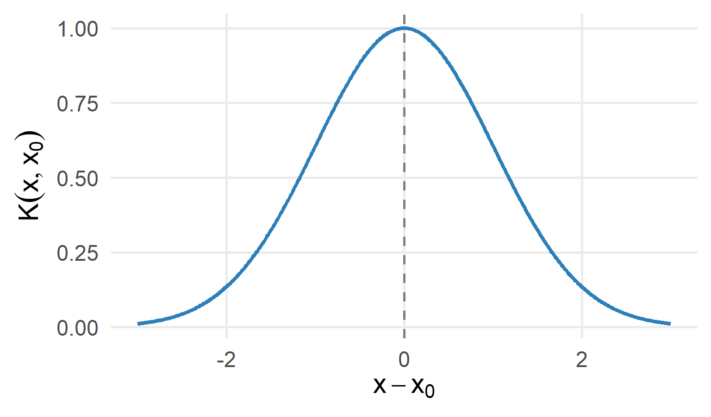

Parte I : Aprendizado Supervisionado
Kernels, RKHS, SVR e SVM
Métodos baseados em RKHS
Por que introduzir outra estrutura?
Até agora controlamos flexibilidade por:
- número de termos;
- número de nós;
- largura de banda;
- tamanho da vizinhança.
Outra possibilidade é penalizar diretamente a complexidade de uma função.
De onde vem a ideia?
Considere o problema de regressão
\[ Y=g(X)+\varepsilon \]
Na regressão linear, restringimos a função a uma forma específica:
\[ g(x)=\beta_0+\beta_1x \]
Mas e se a relação entre \(X\) e \(Y\) for não linear e não quisermos especificar antecipadamente a forma de \(g\)?
Nota
Precisamos definir em qual conjunto de funções procuraremos \(g\) e como controlar sua complexidade.
Da estimação de parâmetros à estimação de funções
Na regressão linear, procuramos um vetor de parâmetros:
\[ \boldsymbol\beta=(\beta_0,\beta_1,\ldots,\beta_p)^\top \]
Nos métodos baseados em RKHS, procuramos diretamente uma função:
\[ \boxed{g\in\mathcal H} \]
onde \(\mathcal H\) representa um espaço de funções.
\[ \text{Regressão linear: procurar }\boldsymbol\beta \qquad\Longrightarrow\qquad \text{RKHS: procurar }g \]
O que significa RKHS?
RKHS = Reproducing Kernel Hilbert Space
Em português:
Espaço de Hilbert com Núcleo Reprodutor
Para uma primeira abordagem, podemos pensar em uma RKHS como
\[ \boxed{\text{um espaço estruturado de funções candidatas para }g} \]
O que significa RKHS?
Não precisamos, neste momento, aprofundar a definição formal de espaço de Hilbert.
Importante
A ideia principal é que a RKHS fornece uma estrutura matemática para comparar, estimar e regularizar funções.
Onde entra o kernel?
Uma RKHS está associada a uma função kernel
\[ K(x,x') \]
que relaciona dois pontos \(x\) e \(x'\).
Um exemplo importante é o kernel Gaussiano (RBF):
\[ K(x,x')= \exp\left\{-\frac{(x-x')^2}{2\sigma^2}\right\} \]
Onde entra o kernel?
Intuitivamente:
\[ x\approx x' \Rightarrow K(x,x')\text{ grande} \]
\[ |x-x'|\text{ grande} \Rightarrow K(x,x')\text{ pequeno} \]
Kernel Gaussiano: uma visão gráfica
Quanto mais distante \(x\) está de \(x_0\), menor é a similaridade determinada pelo kernel.
Construindo uma função com kernels
Uma função em muitos métodos baseados em RKHS pode ser representada na forma
\[ \boxed{ g(x)=\sum_{i=1}^{n}\alpha_iK(x,x_i) } \]
ou seja,
\[ g(x)= \alpha_1K(x,x_1)+\cdots+\alpha_nK(x,x_n) \]
Construindo uma função com kernels
Cada observação de treinamento contribui para a construção da função.
Nota
Os coeficientes \(\alpha_i\) determinam quanto cada função kernel contribui para a função estimada.
Visualizando a construção

A curva final é uma combinação das funções kernel.
Mas isso não pode ficar complexo demais?
Se procurarmos apenas a função que minimiza
\[ \sum_{i=1}^{n}\left[y_i-g(x_i)\right]^2 \]
podemos obter uma função excessivamente flexível.
\[ \text{flexibilidade excessiva} \quad\Longrightarrow\quad \text{overfitting} \]
Mas isso não pode ficar complexo demais?
Precisamos equilibrar
\[ \boxed{\text{qualidade do ajuste} \quad\times\quad \text{complexidade}} \]
Essa ideia já apareceu em Ridge, Lasso e smoothing splines.
Regularização em uma RKHS
Um problema típico é
\[ \boxed{ \min_{g\in\mathcal H} \left\{ \frac{1}{n}\sum_{i=1}^{n}[y_i-g(x_i)]^2 +\lambda\|g\|_{\mathcal H}^{2} \right\} } \]
Temos dois componentes:
\[ \underbrace{ \frac{1}{n}\sum_{i=1}^{n}[y_i-g(x_i)]^2 }_{\text{erro de ajuste}} + \underbrace{ \lambda\|g\|_{\mathcal H}^{2} }_{\text{penalização da complexidade}} \]
O papel de \(\lambda\)
O parâmetro \(\lambda\) controla o compromisso entre ajuste e complexidade.
\(\lambda\) pequeno
\[ \lambda\downarrow \Rightarrow \text{penalização menor} \Rightarrow \text{maior flexibilidade} \]
Maior risco de overfitting.
\(\lambda\) grande
\[ \lambda\uparrow \Rightarrow \text{penalização maior} \Rightarrow \text{menor complexidade} \]
Maior risco de underfitting.
A conexão com Ridge
Na regressão Ridge:
\[ \min_{\boldsymbol\beta} \left\{ \frac{1}{n}\|\mathbf y-\mathbf X\boldsymbol\beta\|^2 +\lambda\|\boldsymbol\beta\|^2 \right\} \]
Na RKHS:
\[ \min_{g\in\mathcal H} \left\{ \frac{1}{n}\sum_i[y_i-g(x_i)]^2 +\lambda\|g\|_{\mathcal H}^2 \right\} \]
A conexão com Ridge
| Ridge | RKHS |
|---|---|
| estima \(\boldsymbol\beta\) | estima \(g\) |
| penaliza \(\|\boldsymbol\beta\|^2\) | penaliza \(\|g\|_{\mathcal H}^2\) |
| controla coeficientes | controla a complexidade da função |
Uma dificuldade aparente
Se \(\mathcal H\) pode conter um número enorme (até infinito) de funções, como resolver
\[ \min_{g\in\mathcal H} \{\text{erro}+\text{penalização}\}? \]
Parece que precisaríamos procurar em um espaço de dimensão infinita.
Mas um resultado fundamental simplifica o problema.
Teorema do Representante
A ideia central
Para uma ampla classe de problemas regularizados, a solução pode ser escrita como
\[ \boxed{ \hat g(x)=\sum_{i=1}^{n}\hat\alpha_iK(x,x_i) } \]
Assim, em vez de procurar diretamente uma função em \(\mathcal H\), precisamos estimar apenas
\[ \hat\alpha_1,\hat\alpha_2,\ldots,\hat\alpha_n \]
A ideia central
Portanto,
\[ \boxed{ \text{problema em espaço de funções} \longrightarrow \text{problema finito de estimação} } \]
A matriz kernel
Calculamos o kernel para cada par de observações:
\[ K_{ij}=K(x_i,x_j) \]
Isso produz a matriz kernel, ou matriz de Gram:
\[ \mathbf K= \begin{pmatrix} K(x_1,x_1)&\cdots&K(x_1,x_n)\\ \vdots&\ddots&\vdots\\ K(x_n,x_1)&\cdots&K(x_n,x_n) \end{pmatrix} \]
Nos pontos de treinamento,
\[ \hat{\mathbf g}=\mathbf K\boldsymbol\alpha \]
O kernel trick
Podemos imaginar uma transformação
\[ x\longmapsto\phi(x) \]
para um espaço de características potencialmente muito grande.
O kernel permite calcular
\[ \boxed{ K(x,x')= \langle\phi(x),\phi(x')\rangle } \]
sem precisar construir explicitamente \(\phi(x)\).
Isso é conhecido como kernel trick.
Por que isso ajuda com relações não lineares?
No espaço original, um modelo pode ser simples demais para representar os dados.
O kernel permite trabalhar implicitamente em um espaço de características mais rico:
\[ x \longrightarrow \phi(x) \longrightarrow \text{modelo flexível} \]
Com isso, podemos representar relações e fronteiras não lineares sem criar explicitamente todas as novas variáveis.
Kernel Ridge Regression
Ridge + kernel
A combinação da perda quadrática com regularização em RKHS leva ao Kernel Ridge Regression.
Com a convenção
\[ \frac{1}{n}\|\mathbf y-\mathbf K\boldsymbol\alpha\|^2 +\lambda\boldsymbol\alpha^T\mathbf K\boldsymbol\alpha, \]
a solução satisfaz
\[ \boxed{ \hat{\boldsymbol\alpha} =(\mathbf K+n\lambda\mathbf I)^{-1}\mathbf y } \]
Ridge + kernel
A predição em um novo ponto \(x\) é
\[ \boxed{ \hat g(x)=\sum_{i=1}^{n}\hat\alpha_iK(x,x_i) } \]
Comparação com regressão kernel
Não confunda regressão kernel com métodos kernel em RKHS.
Nadaraya–Watson
\[ \hat f(x)= \frac{\sum_iK_h(x-x_i)y_i} {\sum_iK_h(x-x_i)} \]
Os pesos são determinados diretamente pela proximidade.
Comparação com regressão kernel
RKHS / Kernel Ridge
\[ \hat g(x)=\sum_i\hat\alpha_iK(x,x_i) \]
Os coeficientes \(\alpha_i\) são estimados globalmente a partir dos dados, com regularização.
Dois usos da palavra “kernel”
A palavra kernel aparece nos dois contextos, mas os papéis não são idênticos.
| Suavização kernel | RKHS |
|---|---|
| pesos locais | estrutura de um espaço de funções |
| largura de banda \(h\) | parâmetros do kernel + \(\lambda\) |
| Nadaraya–Watson | Kernel Ridge, SVM etc. |
| foco em vizinhança | foco em similaridade/produto interno e regularização |
Cuidado
Há conexões matemáticas entre essas ideias, mas não devemos tratá-las como sinônimos.
E os smoothing splines?
Os smoothing splines também resolvem um problema penalizado:
\[ \min_g \left\{ \sum_{i=1}^{n}[y_i-g(x_i)]^2 +\lambda\int[g''(x)]^2dx \right\}. \]
A penalização controla a rugosidade da função.
Essa formulação também pode ser interpretada no contexto de uma RKHS.
E os smoothing splines?
Assim,
\[ \boxed{ \text{smoothing splines} \quad\text{e}\quad \text{Kernel Ridge} } \]
podem ser vistos dentro de uma estrutura mais geral de estimação regularizada de funções.
Onde RKHS aparece em Machine Learning?
A mesma estrutura aparece em diferentes métodos:
\[ \boxed{\text{Kernel Ridge Regression}} \]
\[ \boxed{\text{SVM com kernel}} \]
\[ \boxed{\text{Smoothing splines}} \]
\[ \boxed{\text{outros métodos kernel regularizados}} \]
O que muda entre eles é, entre outras coisas, a função de perda, o kernel e a forma de regularização.
Support Vector Regression
Regressão com margem
\[ \boxed{L_\varepsilon(y,f(\mathbf x))=\max\{0,|y-f(\mathbf x)|-\varepsilon\}} \] A regularização controla a complexidade da função
Support Vector Machines
Da SVR para a SVM
Na regressão, a ideia de margem apareceu na Support Vector Regression
Agora queremos separar classes
Para simplificar, escreva
\[ Y\in\{-1,+1\} \]
e considere um hiperplano
\[ \boxed{ f(\mathbf x) = \beta_0+\boldsymbol\beta^t\mathbf x } \]
Regra de classificação
O sinal de \(f(\mathbf x)\) determina a classe
\[ \boxed{ g(\mathbf x) = \operatorname{sign} \left( \beta_0+\boldsymbol\beta^t\mathbf x \right) } \]
A fronteira de decisão é
\[ \boxed{ \beta_0+\boldsymbol\beta^t\mathbf x=0 } \]
Muitos hiperplanos podem separar os dados
Quando as classes são linearmente separáveis, podem existir vários hiperplanos com erro de treinamento igual a zero
Qual devemos escolher?
\[ \boxed{\text{o hiperplano com maior margem}} \]
Margem
Para a parametrização canônica, as fronteiras da margem são
\[ \beta_0+\boldsymbol\beta^t\mathbf x=1 \]
e
\[ \beta_0+\boldsymbol\beta^t\mathbf x=-1 \]
A largura total da margem é
\[ \boxed{ \frac{2}{\|\boldsymbol\beta\|} } \]
Margem máxima
Maximizar a margem equivale a minimizar
\[ \frac12\|\boldsymbol\beta\|^2 \]
sujeito a
\[ \boxed{ y_i \left( \beta_0+\boldsymbol\beta^t\mathbf x_i \right) \geq1, \qquad i=1,\ldots,n } \]
Support vectors
Os pontos mais próximos da fronteira satisfazem
\[ y_i \left( \beta_0+\boldsymbol\beta^t\mathbf x_i \right) = 1 \]
Essas observações são os support vectors
A posição da fronteira é determinada principalmente pelas observações próximas à margem

E quando não há separação perfeita?
Dados reais frequentemente apresentam:
- sobreposição entre classes
- ruído
- observações atípicas
Exigir separação perfeita pode produzir uma fronteira instável
Precisamos permitir violações da margem
Soft Margin
Variáveis de folga
Introduzimos \(\xi_i\geq0\):
\[ \boxed{ y_i \left( \beta_0+\boldsymbol\beta^t\mathbf x_i \right) \geq 1-\xi_i } \]
Problema de otimização
Uma formulação da SVM é
\[ \boxed{ \min_{\beta_0,\boldsymbol\beta,\boldsymbol\xi} \left\{ \frac12\|\boldsymbol\beta\|^2 + C\sum_{i=1}^{n}\xi_i \right\} } \]
com
\[ \xi_i\geq0 \]
O papel de \(C\)
\(C\) grande
Violações da margem são fortemente penalizadas
\[ C\uparrow \Rightarrow \text{menor tolerância a violações} \]
\(C\) pequeno
Aceitamos mais violações em troca de uma margem maior
\[ C\downarrow \Rightarrow \text{maior regularização} \]

Hinge loss
A SVM também pode ser vista como minimização de
\[ \boxed{ L_{\text{hinge}}(y,f(\mathbf x)) = \max\{0,1-yf(\mathbf x)\} } \]
com uma penalização sobre a complexidade do hiperplano
Interpretando a hinge loss
Se
\[ yf(\mathbf x)\geq1 \]
a observação está corretamente classificada e fora da margem
\[ L_{\text{hinge}}=0 \]
Se
\[ yf(\mathbf x)<1 \]
há penalização
Comparação conceitual
Regressão logística
Estima diretamente uma probabilidade
\[ \widehat P(Y=1\mid\mathbf X=\mathbf x) \]
SVM
Constrói diretamente uma função discriminante
\[ f(\mathbf x) \]
A saída bruta de uma SVM não deve ser interpretada automaticamente como probabilidade posterior
SVM não linear
Quando uma reta não basta
Se a separação é não linear, podemos transformar as covariáveis
\[ \mathbf x \longrightarrow \phi(\mathbf x) \]
e construir um hiperplano no novo espaço

Kernel trick
Em vez de calcular explicitamente \(\phi(\mathbf x)\), utilizamos
\[ \boxed{ K(\mathbf x,\mathbf x') = \langle \phi(\mathbf x), \phi(\mathbf x') \rangle } \]
Assim, podemos produzir fronteiras não lineares no espaço original
Kernels comuns
Linear
\[ K(\mathbf x,\mathbf x') = \mathbf x^t\mathbf x' \]
Polinomial
\[ K(\mathbf x,\mathbf x') = (\gamma\mathbf x^t\mathbf x'+c_0)^d \]
RBF
\[ \boxed{ K(\mathbf x,\mathbf x') = \exp\left( -\gamma\|\mathbf x-\mathbf x'\|^2 \right) } \]

Hiperparâmetros
Na SVM com kernel RBF, dois parâmetros são especialmente importantes
\[ \boxed{ C \qquad\text{e}\qquad \gamma } \]
Eles controlam aspectos diferentes da flexibilidade e devem ser escolhidos por validação
SVM: multi-classe
SVM é naturalmente binário. Para \(C > 2\) classes, duas estratégias principais:
One-vs-One (OVO):
- Ajusta \(\binom{C}{2}\) classificadores binários
- Cada par de classes tem seu próprio SVM
- Votação: cada classificador “vota” na classe vencedora
One-vs-Rest (OVR):
- Ajusta \(C\) classificadores binários
- Cada classe vs. todas as outras
- Classe com maior pontuação é escolhida

SVR × SVM
| Aspecto | SVR | SVM |
|---|---|---|
| tarefa | regressão | classificação |
| região | \(\varepsilon\)-tube | margem |
| perda | \(\varepsilon\)-insensível | hinge |
| kernels | sim | sim |